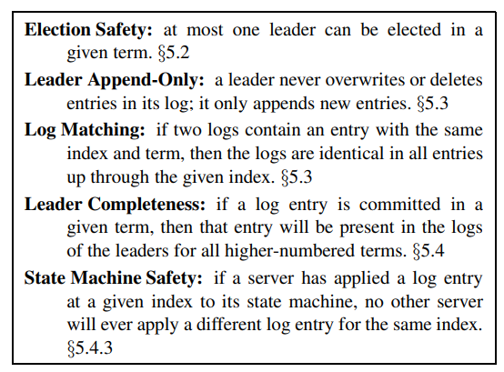
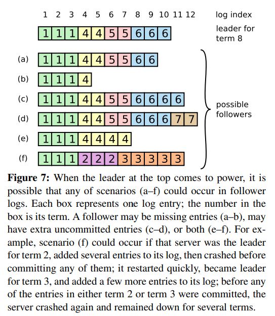
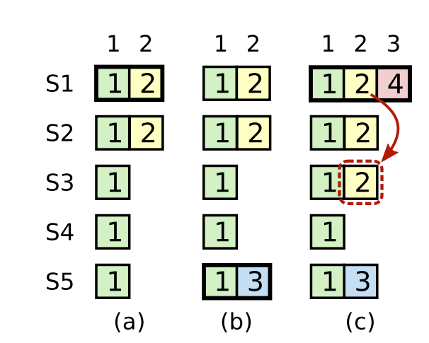

Raft
Consensus Algorithm
- Allow a collection of machines to work as a coherent group even after some members fail
- Use a "replicated state machine" approach where the system is modeled as a state machine
- Each machine has to keep their state up to date and in "consensus" with everyone else
- Commands given to the collection are put into a log and replicated and these commands applied in log order produce the state
- Implements strong consistency for all state machine operations
Properties
- Ensure safety under all non-Byzantine conditions (network delays, partitions, packet loss)
- Fully function / available if majority of servers are operational
- Do not depend on timing to ensure consistency of logs (cannot rely on clocks being in sync)
- A command should complete as soon as a majority of the cluster has responded to a single round of RPCs
Overview
- Elect a distinguished leader that is given complete responsibility for the log
- Leader accepts log entries, replicates them on other servers, and tells servers when it is safe to apply log entries to their state machine
- Based on the majority rule which says that a leader has to be able to communicate with a majority of the servers in the cluster
- This ensures that at least one machine in the majority in each term has to have info from the previous term
- Known as a "quorum" system
- Three subproblems:
- Leader election
- Log replication
- Safety
Guarantees:

Typically five servers, allowing system to tolerate two failures
- Each is a leader, follower, or candidate
- Leader handles all client requests (followers redirect requests to leader)
Time is divided into terms that are numbered with consecutive integers
- Each term begins with an election and the elected leader serves for the rest of the term
- Terms can end in a split vote, resulting in this term being skipped
- Each server keeps track of what it thinks is the current term
- When servers communicate, they send their terms to each other
- If a server learns its term is out of date, then it immediately goes to follower state
- If a server receives a stale term number, it rejects
Only two RPCs: RequestVote during elections and AppendEntries from leaders
- Servers retry RPCs if they do not receive a response and they issue RPCs in parallel
Leader Election
- All servers begin as followers and remain as such while they receive valid RPCs from leaders (for append entries) or candidates (for votes)
- If a timeout ends, then it becomes a candidate and starts an election (after incrementing its term)
- It contacts all other servers and if they get the response, they will go to follower state (since the term was incremented) and will send their vote
- When a server is contacted for the first time with a request vote with a brand new term, then it will send its vote on a first-come first-serve basis
- If it already voted in the term, then it will not send the vote
- Once a candidate wins, it will send heartbeat notifications to tell everyone that this is the new leader
- This will cause everyone to see heartbeat messages from a new term and cause them to revert to be follower
- If we have a split vote election, then each candidate will time out and we will run a new election
- To ensure that this doesn't happen often, we randomize election timeouts so that they are staggered and most of the time only one election occurs at a time
Log Replication
- A client request contains a command that is sent to the leader
- The leader appends the command to its log and then sends messages to all followers to replicate this
- When the entry is safely replicated, then the leader applies the entry to its state machine and then returns result to client
- If followers crash / run slow, then leader retries indefinitely until all followers store all log entries
- Log entries store the client command, the term number when the entry was received by the leader, and the integer index of its position in the log
- A log entry is committed when it is safe to apply to all state machines, which is when a majority of server contain the entry
- The leader keeps track of the highest index it knows is committed and sends this during AppendEntries RPCs so that followers can see if they are out of date
- When sending AppendEntries RPC, there is a simple consistency check to ensure the Log Matching Property is satisfied:
- The RPC includes the index and term of the entry in its log that precedes whatever is about to be added
- The follower will refuse the new entries if it doesn't match up
- If this is satisfied, then we know that the follower's log is identical to the leader's log up through the new entries
- Leader crashes can leave logs inconsistent if the old leader had not fully committed all entries in its log

- We handle inconsistency by forcing follower logs to match the leaders
- The leader has to find the latest log entry where the two logs agree, delete everything in follower log after that, and then send all of the new data
- This is safe if we meet a certain condition when electing the new leader (explained in safety section)
- The leader maintains a nextIndex for each follower, which keeps track of what is the next log entry the leader will send that follower
- This is initially set to the one just after the end of the leader's log (so it can send new data) but if an AppendEntries RPC fails the consistency check, then nextIndex will be decremented and the RPC updated until the consistency check passes
- After this occurs, the AppendEntries will succeed and make the leader and follower logs match
- This process can be optimized to require less RPCs (only one RPC per mismatching term) but this doesn't seem to be necessary
Safety
- Currently without additional checks when electing leaders, we could elect a leader that was unavailable while another leader committed several log entries
- It would then override committed log entries, messing up the state machine
- We need a restriction to ensure that the leader for any given term contains all entries committed in previous terms
- When asking for votes, a candidate must include data about its log and a voter can deny if its own log is more up-to-date
- Does this by comparing the index and term of the last entries in the logs to see which is more up to date
- Raft does not have new leaders attempt to commit entries from previous terms that were unfinished
- Instead, these entries are just wiped
- With all of this, Raft is completed and we can prove all of the properties in Figure 3
- Specifically the Leader Completeness Property can be proven by showing that if a leader commits an entry in a prev term it cannot not show up in a leader in a future term
- General idea is that the majority rule means that a leader can't win an election without at least getting a vote from a vote from the previous term, so it has to pass the consistency check
Log Compaction
- As log grows longer unbounded, it takes up more space and takes more time to replay
- We write the entire current system state to a snapshot that incorporates all of the changes made in the log
- Then we can just throw away the log after snapshotting it
- Each server takes snapshots independently and only of the entries known to be committed
- Each snapshot consists of:
- Current state
- Last included index (index of last log entry included)
- Last included term (term of that entry)
- The extra metadata allows for the AppendEntries consistency check
- Leader occasionally sends snapshots to lagging followers
- If the leader has discarded a log entry that is needed to update a follower that is very behind
- Tradeoff between snapshotting frequently and infrequently
- Frequent = wasting disk bandwidth / energy
- Infrequent = risks storage capacity running out / increases time to replay log
- Simple strategy is to snapshot when the log reaches a fixed size
Client Interaction
- Clients send their requests to the leader
- To find leader, can try randomly chosen servers or servers can send back info about which one is the leader
- Raft can potentially execute a command multiple times if a leader crashes after committing but before responding to client
- Clients can assign unique serial IDs to commands to ensure that they are not applied twice on the state machine level (could appear twice in the log)
- Read operations don't need to write to the log, but have to be careful to not return stale data
- Leader has to know which entries have been committed, but it may not know all of them when the term starts (i.e. some of the entries in its log might not have been committed)
- What it does is just enforce its view on everyone else and it adds a no op operation to the log and waits until its committed before proceeding
- Example of how this can occur:
- S1 becomes leader and partially replicates 2 and then crashes
- S5 becomes leader and then adds 3
- Then S5 crashes and S1 becomes leader again but it doesn't know if 2 has been replicated or not (the request went out to everyone but it doesn't know if it failed or not while it was down)
- If the client now issues a read and it just returns 2 as the latest operation but it wasn't actually ever committed and then S1 crashes and S5 becomes leader again and commits something else, then know we have bad data being given back to the client

- Leader has to make sure it wasn't deposed before responding to read-only request
- Sends heartbeat and checks if it can contact a majority before responding